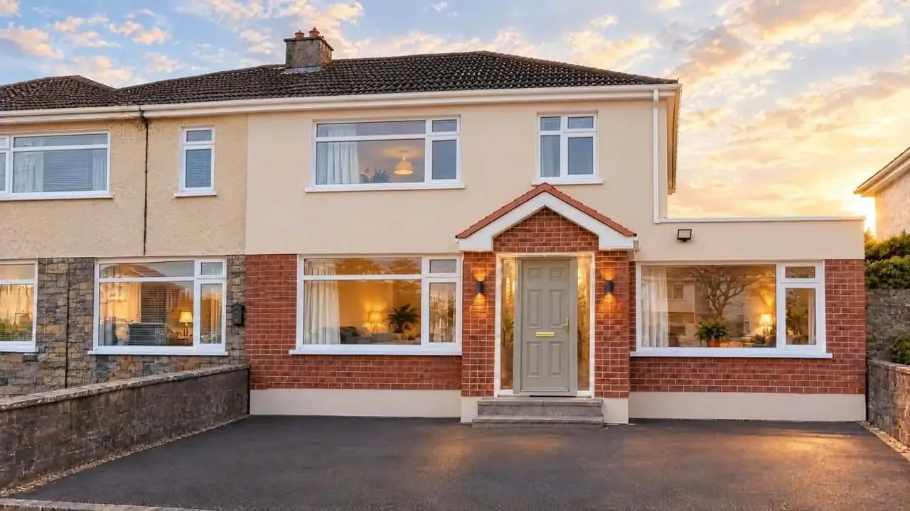
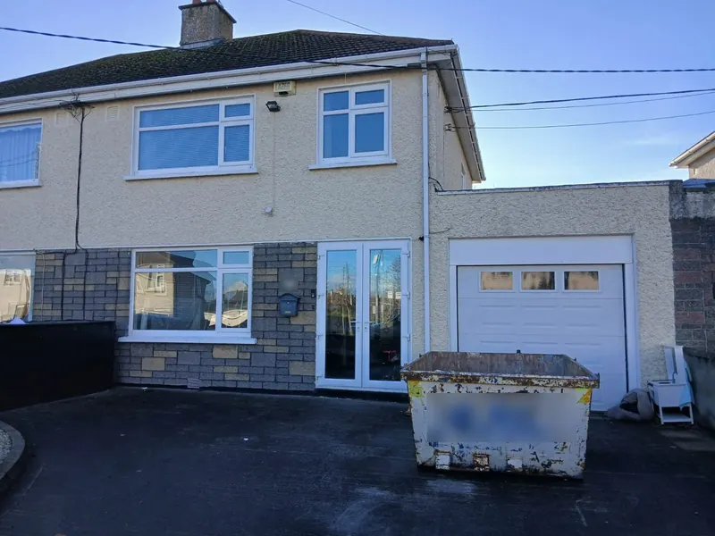
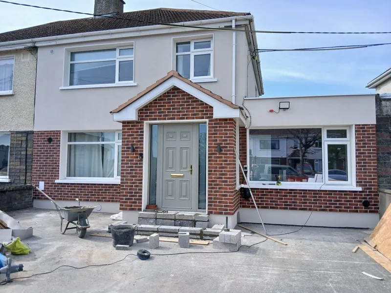
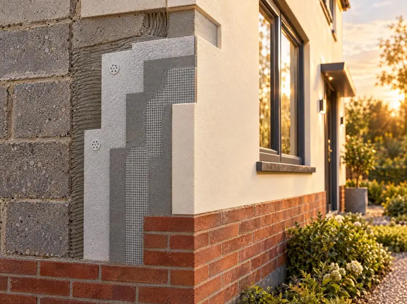
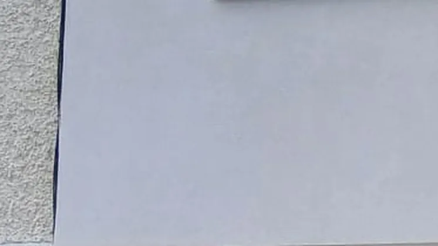
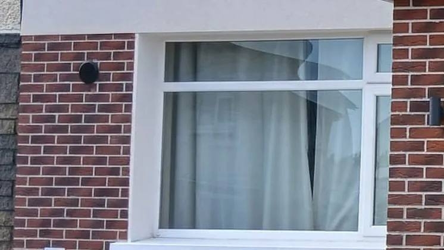
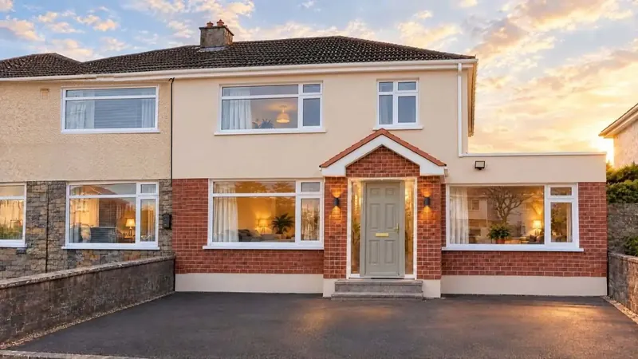

Warmth stays in
A layer of insulation across the whole outside wall helps keep the heat you pay for inside.

External wall insulation in Dublin
We insulate the outside walls of Dublin homes and finish them in render or brick. Scroll to see one of our jobs change, layer by layer.
Before
This is how the house looked before we started. Outside walls without insulation lose heat all winter.
Insulation
Boards are fixed to the outside of the wall. Reinforcing mesh set into a basecoat gives the finish a solid base.
Finish
The finish is the part you see every day. This house has a brick finish below and smooth render above.
Completed
Visualisation based on a real Absolute Acrylics project.
Skip transformation
External wall insulation in Dublin
We insulate the outside walls of Dublin homes and finish them in render or brick.
Image: visualisation based on a real Absolute Acrylics project. See the real photos.
Why external wall insulation
The insulation goes on the outside of your walls, so the inside of your home stays as it is.
A layer of insulation across the whole outside wall helps keep the heat you pay for inside.
Rooms keep their size. Skirting, sockets and radiators stay where they are.
Dated pebbledash or cladding is covered by a fresh render or brick finish.
You can keep living at home while we work on the walls.
Our work
These are real photos of the house in our opening sequence, taken before we started and when the walls were finished.


The after photo was taken as the walls were finished, before the driveway was cleared.
SEAI grant
Homeowners can get the SEAI grant for external wall insulation. We are SEAI registered and make the grant application on your behalf, so you don't have to deal with the forms.
Grant eligibility and amounts are set by SEAI. We'll go through what applies to your home when we quote.
How it works
Call 086 365 4911 or send the quote form with a few details about your home.
We talk through your home and the finish you want, give you a quote, and apply for the SEAI grant for you.
Insulation boards are fixed to the outside walls, then covered with reinforcing mesh set into a basecoat.
The walls are finished in acrylic render, with brick where you want it, such as the ground floor.
Once the job is done, our work is covered by a 10-year guarantee.

Finishes
The insulation does the work. The finish is how your home looks for years after. These close-ups are from the house in our before and after photos.

A smooth, even render over the insulated wall. The rough pebbledash at the edge is the house next door.

Brick on part of the house, like the ground floor, with render above.
We'll go through the finish options for your house when we quote.
Alongside external wall insulation, we insulate attics and fill cavity walls with pumped insulation. Ask about either when you get in touch.
Questions
Short answers to what homeowners ask first. Anything else, call 086 365 4911.
It depends on the house and its walls. We'll look at your home and tell you honestly when we quote.
The work is done from the outside, so you can keep living at home. Your rooms stay the same size.
It depends on the size of the house and the finish. We'll give you an idea when we quote.
Mainly the size of the walls and the finish you choose. Send the quote form or call and we'll price your home.
Acrylic render, with brick on part of the house, such as the ground floor, if you want it. We'll go through the options with you.
No. We're SEAI registered and apply for the grant on your behalf. Eligibility and amounts are set by SEAI, and we'll go through what applies to you.
Yes. Our work comes with a 10-year guarantee.
Most of our work is in Dublin, and we take on some projects further afield. Call 086 365 4911 to check.

Get a Quote
Send a few details and we'll be in touch about your quote and your SEAI grant. Prefer to talk? Call us.
Where we work. Mostly Dublin, with occasional projects further afield. Not sure if we cover you? Call and ask.